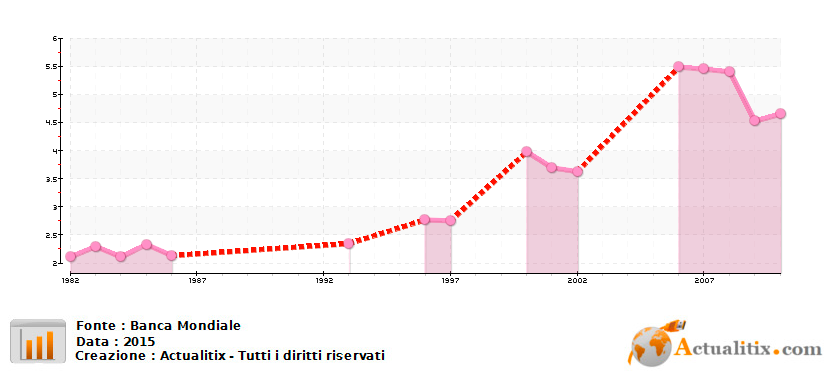
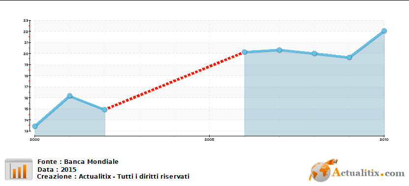

Modern Western education arrived in Ethiopia in the Twentieth Century and had a slow spread: only 3.3% of school-age people attended school in 1961. Unlike other African countries, where colonial rule of the European countries was more rooted, Ethiopia was one of the last countries to be colonized, precisely by Italy, and for this reason its educational system developed in an "indigenous" way compared to the rest of the colonized countries. After the construction of the University of Addis Ababa, the first higher institute in Ethiopia in 1950, new colleges were established in the following decades, mostly administered by Westerners.
During the Marxist period of the Derg (Provisional Military Government of Socialist Ethiopia) from '77 to '91, educational policies were influenced by the Communist countries. Although the Derg government exploited education by politicizing it to use it for ideological indoctrination, progress was made in increasing enrollment rates in elementary schools. The dictator Menghistu launched a large-scale program for literacy: despite the civil war, the latter found a great success achieved by the national illiteracy rate. In higher education, however, entry rates declined despite more institutions. University spending has been reduced to favor military spending. This managed to make many academics men flee the country
Considerable progress has been made for primary school by reducing the distance between schools and students' homes with a national strategy called Alternative Basic Education which since 2006 has guided the transformation of buildings in a state of decay into regular schools. In secondary school, on the other hand, in the last twenty years the enrollment rate has roughly quintupled to reach 2 million enrolled in 2013. However, there is still a major limitation: the difficulty of accessing this school, especially in the suburbs since for every thirteen primary school there is only one secondary school. Given the small number of institutions, the demand is much lower, also due to the problems of poverty and the lack of an efficient transport system. Secondary education is divided into two cycles: the first lasts two years and acts as a bridge between primary and secondary school and ends with the Ethiopian General Secondary Education Certificate, which guarantees access to the second level.
In 1986, there were only three universities and 16 colleges with fewer than 18,000 students. Today there are 30 public universities and the private sector is growing. The number of universities students has exploded from just over 30,000 in 91 to nearly 800,000 in 2014. This exponential growth has overloaded the system and created new problems, such as a lack of funding and a deterioration in the quality of education: Only 15% of teachers have a PhD and funding is therefore very low, placing Ethiopia below other African countries such as Rwanda and Tanzania. Unemployment among graduates is high and this raises questions about the quality of academic education, making it unsuitable for the demands of the labor market. Even today, access to university education in Ethiopia remains severely limited.
